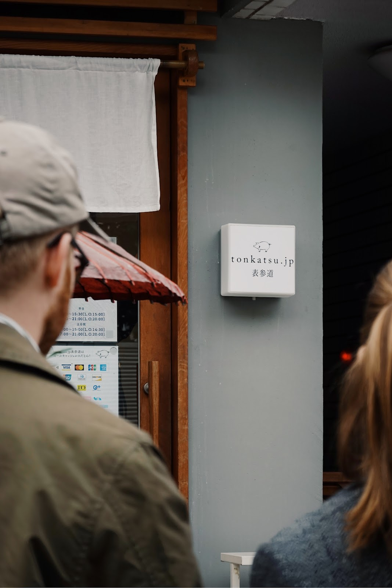

tonkatsu.jp 表參道

東京大名鼎鼎的豬排店。本來想點腰內肉，但畢竟是初訪，最後還是選擇主打的裏脊，品種是茨城縣產的品種豬 (純粋種) デュロック (Duroc)。 也許是放牧畜養的關係，肉質非常緊實，緊實到以為是草飼牛。雖然還是無法全心接受全脂部份的口感，但風味是溫和的，甚至帶點甜香。
坐在吧台看廚師處理麵衣、下油、靜置，一切井然有序且潔淨，第一次在日本吃品種豬，大概是來對地方了。
佐鹽有兩種，裏脊肉推薦搭配白罐「黒潮源流塩」，腰內肉推薦搭配應有旨味的黑罐「SAI」，但是木舌我只比前者多嚐到一點甜感。
離開前買了「小花」鹽。